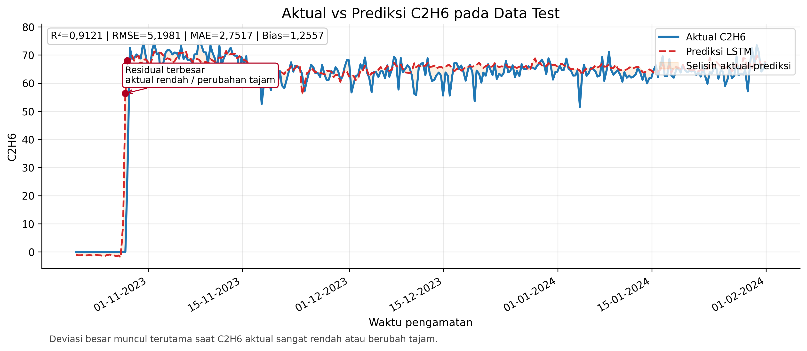
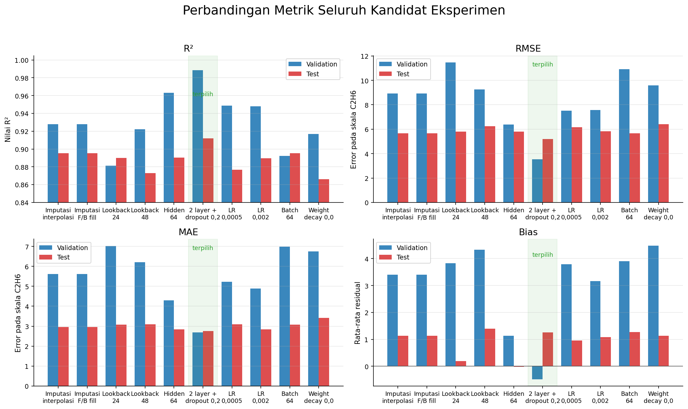
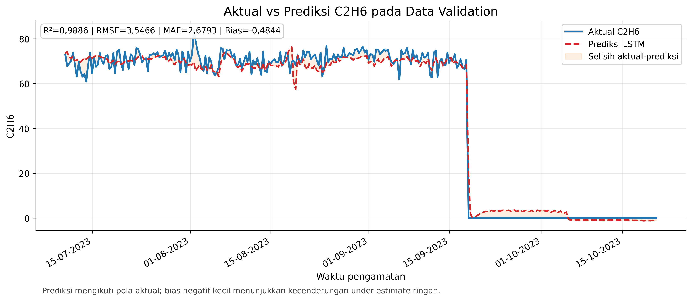
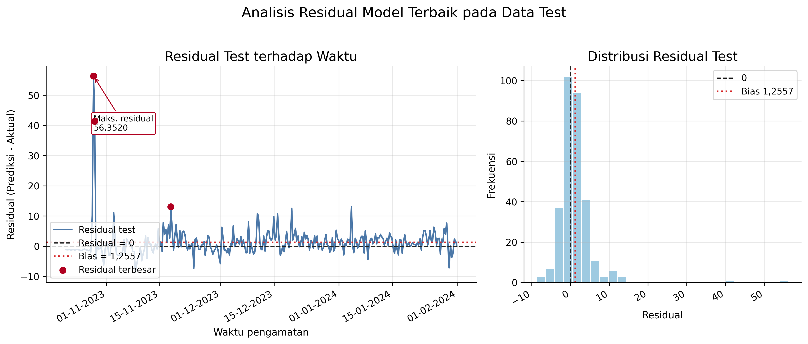

Data
2.057 observasi, 13 variabel masukan, dan satu target: C2H6. Urutan waktu dipertahankan dari awal hingga akhir.
Halaman proyek penelitian
Soft sensor berbasis LSTM untuk mengestimasi kandungan etana (C2H6) dari data historis proses deethanizer dengan pra-pemrosesan deret waktu kronologis dan pemodelan berbasis sequence.
Intisari
PT Badak LNG Bontang menghadapi perubahan komposisi gas umpan setelah penambahan gas lean dari Lapangan Merakes. Pengukuran Gas Chromatograph tetap penting, tetapi jeda analisis dan kebutuhan pemeliharaan menimbulkan kebutuhan estimator berbasis data yang lebih kontinu.
Penelitian ini mengembangkan Soft Sensor Long Short-Term Memory (LSTM) untuk mengestimasi kandungan etana pada Deethanizer Column Plant 3 Train G. Model menggunakan 2.057 observasi kronologis dari 17 Maret 2022 hingga 31 Januari 2024 dengan 13 variabel proses sebagai masukan.
Metode
2.057 observasi, 13 variabel masukan, dan satu target: C2H6. Urutan waktu dipertahankan dari awal hingga akhir.
Celah pada fitur proses diisi dengan interpolasi linear dan backward/forward fill. Nilai target tidak diimputasi.
Split kronologis 70/15/15, optimizer Adam, early stopping, dan checkpoint model berdasarkan validasi terbaik.
Hasil




Artefak
Kode pelatihan, konfigurasi eksperimen, dan catatan reproduksibilitas tersedia di GitHub.
Versi detail
Cerita penelitian ini dimulai dari masalah operasional: komposisi gas berubah, tetapi pengukuran komposisi tidak selalu tersedia seketika. Soft sensor dibangun sebagai jembatan antara data proses yang terus mengalir dan kebutuhan estimasi etana yang lebih cepat.
Setelah masuknya pasokan gas lean dari Lapangan Merakes, komposisi gas umpan di PT Badak LNG Bontang berubah. Kandungan metana meningkat, sedangkan hidrokarbon berat seperti etana, propana, dan butana menurun. Perubahan ini membuat pemantauan kandungan etana menjadi penting untuk memahami kondisi operasi deethanizer.
Gas Chromatograph tetap menjadi instrumen referensi, tetapi pembacaan memiliki jeda analisis dan perangkat membutuhkan pemeliharaan. Ketika analyzer tidak tersedia, operator membutuhkan cara lain untuk memperkirakan komposisi dari sinyal proses yang tersedia secara historis dan lebih kontinu.
Penelitian ini memperlakukan estimasi C2H6 sebagai masalah deret waktu. Alih-alih membaca satu baris proses secara terpisah, model melihat konteks historis melalui sequence LSTM. Dengan cara ini, model belajar dari pola perubahan laju alir, level, tekanan, dan temperatur sebelum menghasilkan estimasi kandungan etana.
Dengan demikian, tujuan penelitian diarahkan pada pembangunan baseline soft sensor LSTM untuk estimasi C2H6 pada Deethanizer Column Plant 3 Train G.
Dataset berisi 2.057 observasi historis dari 17 Maret 2022 sampai 31 Januari 2024. Model menggunakan 13 variabel proses sebagai masukan dan C2H6 sebagai target. Urutan waktu dipertahankan, fitur proses diisi dengan interpolasi linear dan isian tepi, sedangkan target tidak diimputasi.
Pembagian data dilakukan secara kronologis dengan proporsi 70% untuk train, 15% untuk validation, dan 15% untuk test, sehingga evaluasi dilakukan pada periode setelah data pelatihan.
Normalisasi dihitung hanya dari data train agar statistik dari validation dan test tidak memengaruhi proses pelatihan.
Setelah pra-pemrosesan, data tabular dikonversi menjadi sequence menggunakan sliding window; konfigurasi terbaik menggunakan konteks historis sepanjang 36 timestep.
Eksperimen dimulai dari konfigurasi dasar LSTM, lalu membandingkan kandidat pra-pemrosesan dan hiperparameter: strategi imputasi fitur, panjang lookback, hidden size, jumlah layer, dropout, learning rate, batch size, dan weight decay. Pemilihan model dilakukan menggunakan performa validation, sementara test disimpan sebagai holdout akhir.
Konfigurasi terbaik menggunakan LSTM dua layer, dropout 0,2, hidden size 32, dan lookback 36 timestep. Pada data test, model mencapai R² 0,9121, RMSE 5,1981, MAE 2,7517, dan bias 1,2557. Grafik aktual-versus-prediksi menunjukkan model mengikuti tren utama C2H6, walaupun masih melemah saat nilai aktual berubah tajam.
Hasil ini menunjukkan LSTM layak dipertimbangkan sebagai baseline soft sensor atau alat bantu monitoring. Namun, model belum dapat langsung menggantikan analyzer. Implementasi operasional masih membutuhkan validasi real-time, pembandingan terhadap toleransi proses, dan kajian bersama engineer operasi pada periode transient atau anomali.
Secara praktis, model ini lebih tepat diposisikan sebagai decision-support awal, bukan sebagai pengganti final analyzer tanpa validasi lanjutan.